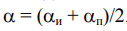
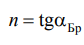
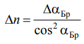

1. Установите на столике в центре диска стеклянную пластину, надежно закрепите ее. Консоль с лазером установите под углом αи = 70°. Включите в сеть блок питания
лазера и вольтметр.
Внимание! При выполнении задания НЕ ДОПУСКАТЬ
попадания в глаза прямого или отраженного лазерного луча!
2. Вращая консоль с приемником света, установите его так,
чтобы отраженный луч попадал в центр приемника. Смещая приемник в ту или иную сторону, найдите такое его положение, при
котором показание вольтметра максимально. Занесите в таблицу
угол установки лазера αи, угол расположения приемника αп
и показание вольтметра U.
3. Уменьшая угол установки лазера αи на 2°, каждый раз определяйте угол расположения приемник αп и показания вольтметра
U, как это было выполнено в пункте 3. Измерения проводите до
αи = 40°. В интервале 50° < αи < 60° измерения проводите через 1°.
4. После завершения
измерений выключите блок питания лазера и вольтметр из сети.
5. Для каждого измерения вычислите угол падения α лазерного луча на стеклянную пластину по

6. Постройте графики зависимости напряжения U от угла падения α для двух образцов. Напряжение U откладывайте вдоль оси
y, а угол падения α – вдоль оси x. По минимумам графиков определите углы Брюстера αБр для каждого образца.
7. По вычислите показатель преломления пластин,

а по оцените погрешность измерения.

Подготовьте выводы по выполненной лабораторной работе.
Анимированный порядок выполнения можно увидеть ниже.